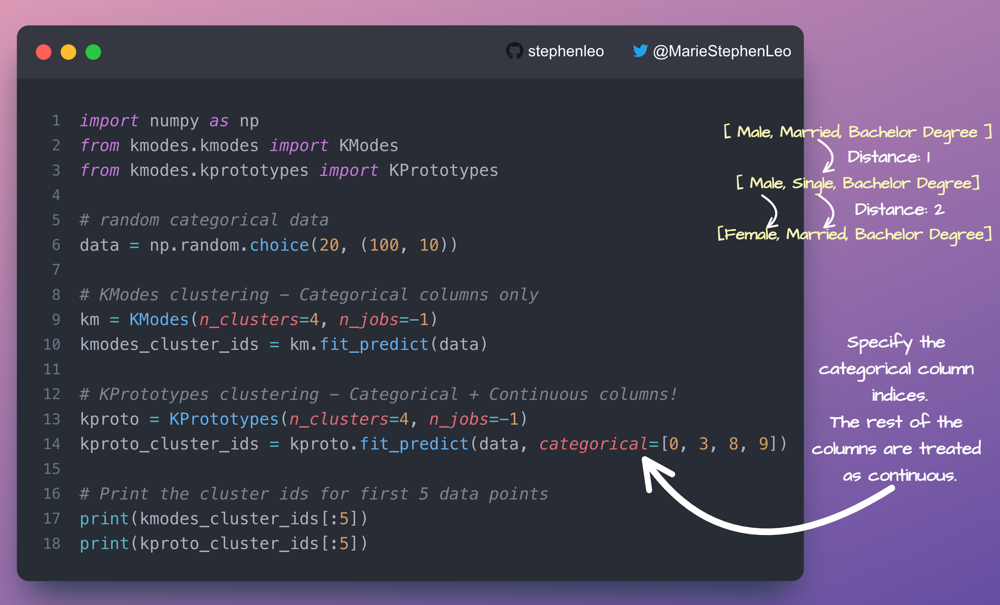

🍇 Clustering
Contents
🍇 Clustering#
Unsupervised grouping of related items
🍢 KModes: Clustering of Categorical Data#
KModes: Clustering of Categorical Data WITHOUT One-Hot encoding!
KMeans clustering using Euclidean distance to find clusters so you need to one-hot encode all categorical data
In KModes clustering, you can directly cluster categorical data without one-hot encoding!
KModes uses the number of dissimilar values between two categorical vectors as a distance metric to assign each data point to its nearest cluster at each clustering step.
Mode is the most observed value for each column in the cluster
Implement in one line of code!
It also supports the K-Prototypes algorithm for combining k-modes and k-means on mixed categorical + numerical data.
pip install kmodes
🌟 Github: https://github.com/nicodv/kmodes
{kind=link}
import numpy as np
from kmodes.kmodes import KModes
from kmodes.kprototypes import KPrototypes
# random categorical data
data = np.random.choice(20, (100, 10))
# KModes clustering - Categorical columns only
km = KModes(n_clusters=4, n_jobs=-1)
kmodes_cluster_ids = km.fit_predict(data)
# KPrototypes clustering - Categorical + Continuous columns!
kproto = KPrototypes(n_clusters=4, n_jobs=-1)
kproto_cluster_ids = kproto.fit_predict(data, categorical=[0, 3, 8, 9])
# Print the cluster ids for first 5 data points
print(kmodes_cluster_ids[:5])
print(kproto_cluster_ids[:5])
[1 1 0 1 3]
[3 2 3 2 1]